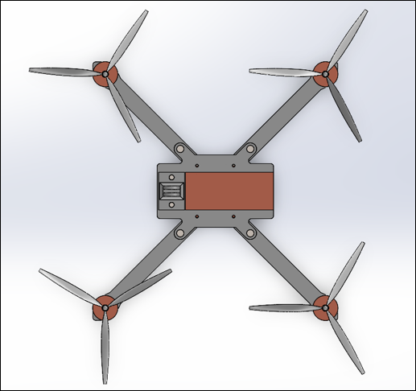
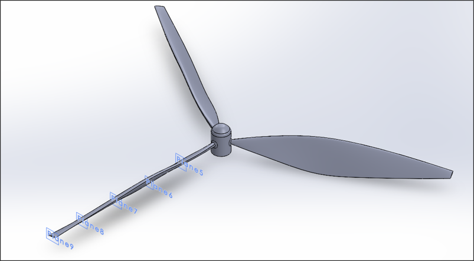
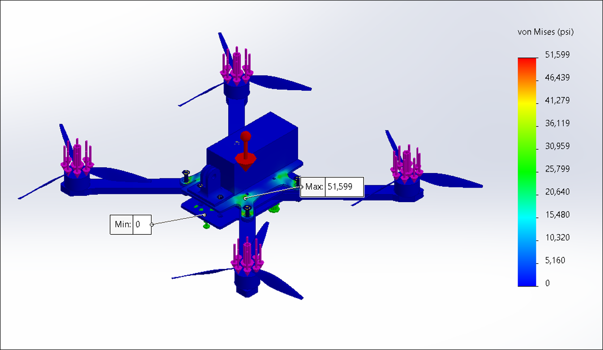
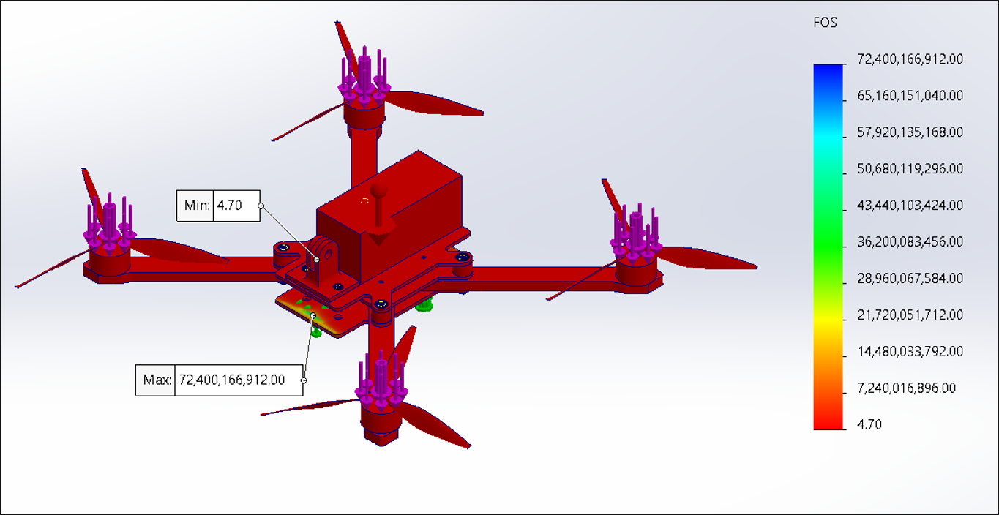

Selected work · 01
Drone Project
- Summary
- Designed and analyzed a high-performance racing drone assembly using CFD and FEA to validate structural integrity and flight feasability.
- Role
- Team member primarily focused on propeller design, CFD, and FEA analysis to determine feasibility of the design.
- Challenges
- Engineered custom aerodynamic propeller profiles in SolidWorks using spline and loft tools. Executed complex CFD simulations to visualize flow trajectories. Defined specific boundary conditions via a theroetical no-load speed of 26,640 RPM, derived from a 1800 KV motor running on a 14.8V power system. Performed FEA analysis to ensure the bolt connections lasted and frame assembly could survive movement.
- Results
- No-load theoretical CFD generated a simulated 16.28 N of thrust at a theroetical 2,789 rad/s. Understanding real-world drag would reduce velocity roughly to 75% of max RPM, we used aerodynamic scaling laws to estimate a real 9.16 N of thrust across the 5 in propellers. Against the ~400 gram assembly, this netted a highly competitve 9.3:1 thrust-to-weight ratio. Furthermore, we had a minimum FoS of 4.70 during testing and could produce this design for around 8% less than prebuilt setups.
Project visuals




